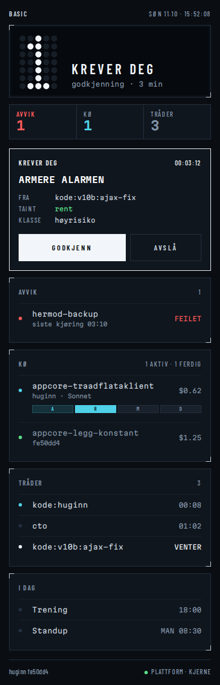
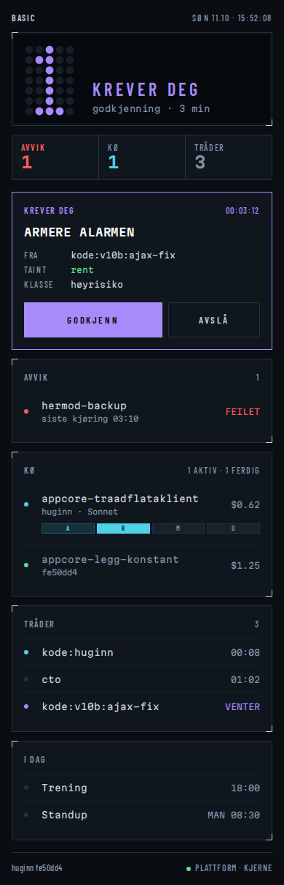
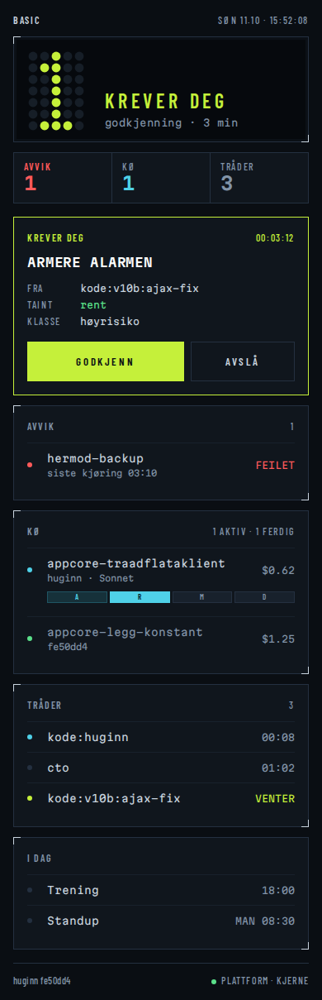

Ravgul — referansen
kontrast 9,9 · svakeste skille 37 (protan)
Det du har sett til nå.
Hvit / is
kontrast 16,7 · svakeste skille 21 (protan)
Ingen fargetone: lysstyrke betyr «handle». Rødt blir eneste farge og betyr bare avvik.
Fiolett
kontrast 6,7 · svakeste skille 15 (tritan)
Mest personlighet. Svakest for tritanope, og «AI-fargen».
Lime
kontrast 13,8 · svakeste skille 31 (tritan)
Skarp og teknisk, men i samme fargefamilie som «ok»-grønt.